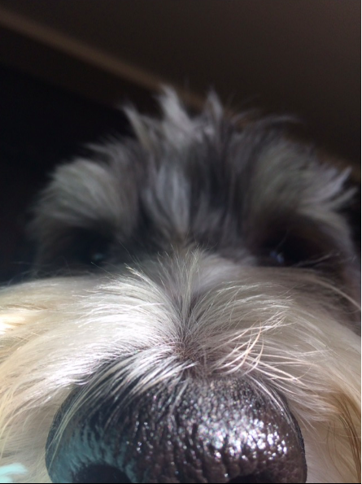

The Sheepadoodle is a breed of an Old English Sheepdog and a Standard Poodle and can average from about 60-75 pounds.
Sheepadoodles are great for anyone who has allergies because they are hypoallergenic, meaning they don't shed and they are unlikely to start an allergic reaction. Sheepadoodles love to run and play outside and they are great family dogs. Although sheepadoodles are largers they are gentle and calm for the most part
Another benefit of having a sheepadoodle is that they are very easy train and they are family friendly. They can range from having black, white, and grey fur. Sheepadoodles bring a lot of joy and memories to families! Adopt or buy your sheepadoodle today!!
Some sources to learn more information...